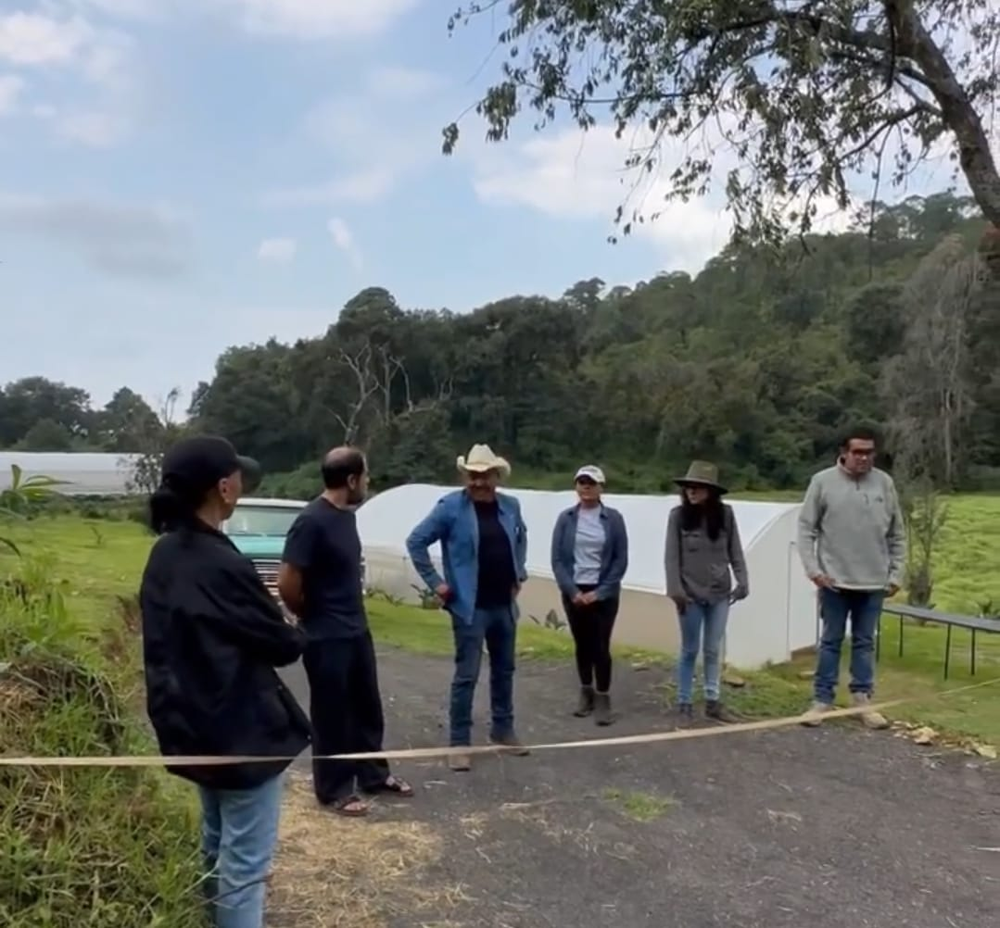

Mil Huertas se funda con el propósito de compartir la experiencia y los conocimientos del cultivo responsable, con diversos talleres y experiencias en San Bartolo Amanalco.
>Se fundó por Orlando Reyes con el propósito de que sus visitantes conocieran más sobre la producción responsable de los alimentos en Valle de Bravo. Mil Huertas privilegia la calidad sobre la cantidad en sus cultivos, y labora también como proveedor para diversos restaurantes en la CDMX.
